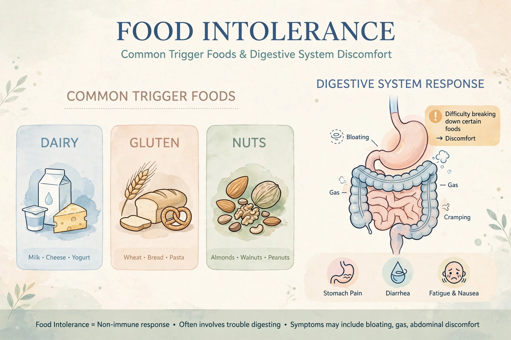

Food intolerance is a detrimental reaction to a food, beverage or additive that does not involve the immune system in the way a food allergy does. Symptoms — usually gastrointestinal such as bloating, diarrhoea, abdominal pain, plus headache or flushing — are typically dose-dependent and delayed, and are rarely life-threatening.

| Food intolerance | |
|---|---|
| Symptoms | Bloating, abdominal pain, diarrhoea, headache |
| Common causes | Lactose, FODMAPs, histamine, additives |
| Diagnosis | Elimination diet, breath tests |
The best-known cause is lactose intolerance, from deficiency of the enzyme lactase. Others include malabsorption of fructose and FODMAP carbohydrates, histamine intolerance, sensitivity to additives such as sulfites and monosodium glutamate, and pharmacological effects of caffeine or alcohol. Coeliac disease and non-coeliac gluten sensitivity are distinct: coeliac disease is autoimmune.
Diagnosis relies on dietary history, elimination and re-challenge diets, and hydrogen breath tests for lactose/fructose malabsorption. Many commercial IgG-based tests are not scientifically validated. Management is dietary modification, enzyme supplements (e.g. lactase), and dietitian support to avoid unnecessary restriction.
Unlike food allergy, intolerance does not cause anaphylaxis and generally tolerates small amounts. Confusion between the two is common in self-report surveys.